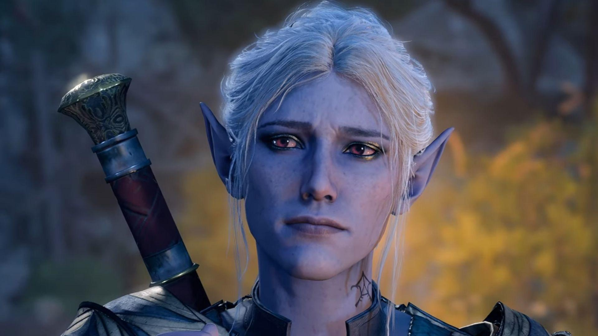
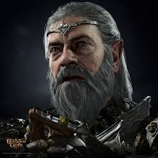
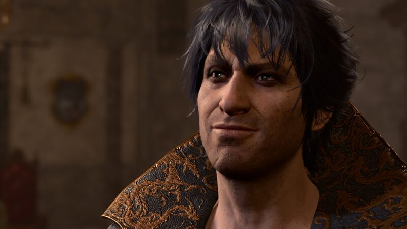

Minthara - A Sacerdotisa Fanática:
Minthara, uma sacerdotisa goblin, é uma figura sinistra e carismática que lidera os Filhos de Ghaunadaur, um culto devoto dedicado a um deus abissal. Ela exala uma aura de fanatismo e crueldade, manipulando seus seguidores para cumprir seus desejos sanguinários. Com sua inteligência afiada e seu domínio das artes das trevas, Minthara é uma ameaça formidável para qualquer um que se atreva a atravessar seu caminho.
|
 |
Ketheric Thorm - O Mestre das Sombras:
Ketheric Thorm é um necromante poderoso e astuto, cujo domínio sobre as artes negras o coloca como uma das maiores ameaças em Baldur's Gate 3. Sua sede insaciável por poder e conhecimento o leva a realizar experimentos sombrios e desencadear horrores indescritíveis sobre a cidade. Com seus exércitos de mortos-vivos e suas habilidades mágicas formidáveis, Thorm é uma força a ser temida, enquanto ele busca atingir seus objetivos sombrios a qualquer custo.
|
 |
Orin - O Mestre Assassino:
Orin é um assassino habilidoso e sem escrúpulos, cujas habilidades mortais são igualadas apenas por sua falta de misericórdia. Ele opera nas sombras, eliminando seus alvos com precisão e eficiência implacáveis, enquanto acumula riquezas e poder para si mesmo. Com sua astúcia e destreza mortal, Orin é uma ameaça constante para os protagonistas, sempre à espreita, esperando o momento certo para atacar e eliminar qualquer obstáculo que se interponha em seu caminho.
|
 |
Gortash - O Líder Orc Brutal:
Gortash, o chefe dos orcs selvagens que assolam a região, é uma força de destruição e caos desenfreado. Sua sede por sangue e conquista o leva a liderar suas hordas em ataques brutais contra qualquer assentamento ou cidade que cruzar seu caminho. Com sua força bruta e sua determinação implacável, Gortash representa uma ameaça iminente para a paz e a segurança da região, deixando um rastro de destruição e desespero por onde passa.
|
 |